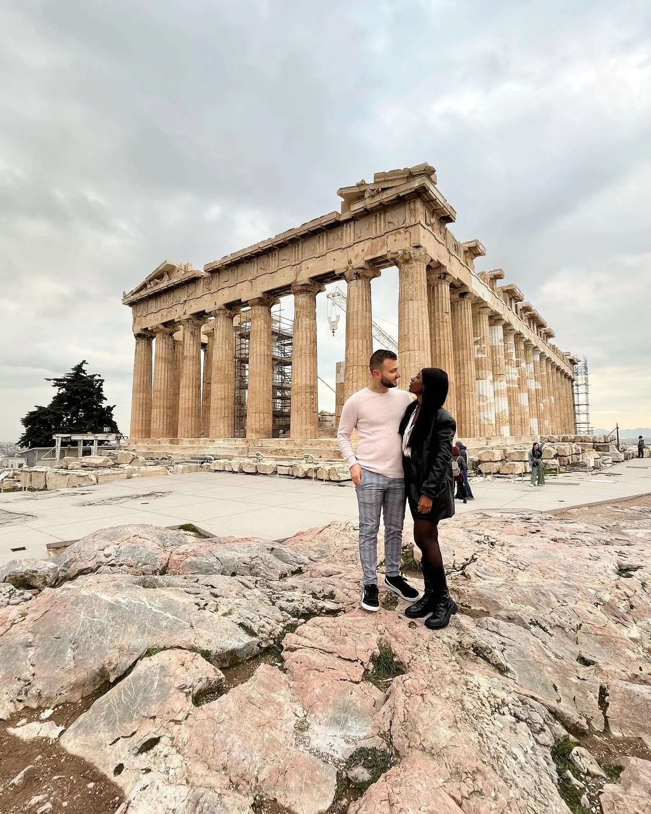
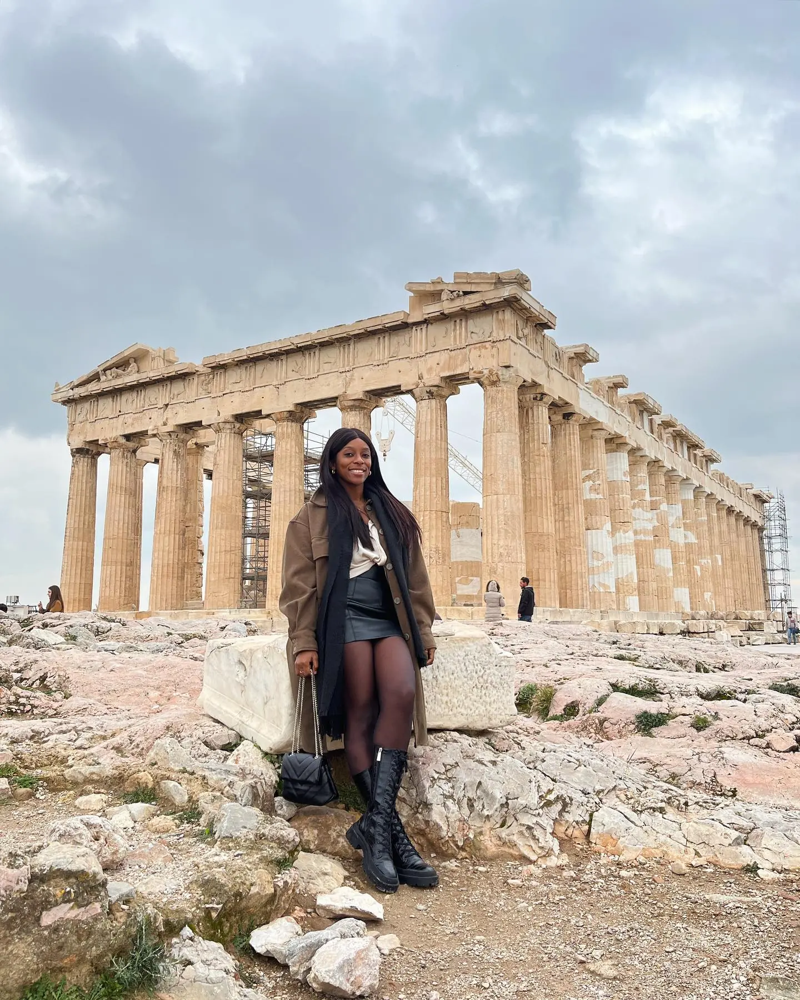

Athens · The highlight01
The Acropolis & the Parthenon
📍 The Acropolis of Athens
This was the moment we came for. The Parthenon, 2,500 years old and still commanding the skyline, is even more overwhelming in person than you expect: it genuinely stopped us in our tracks. The whole Acropolis rewards a slow wander: the Propylaea gateway, the Temple of Athena Nike, the Erechtheion. Go as early as you can, wear proper shoes for the polished marble, and give yourself a couple of hours.
Go at openingGrippy shoes